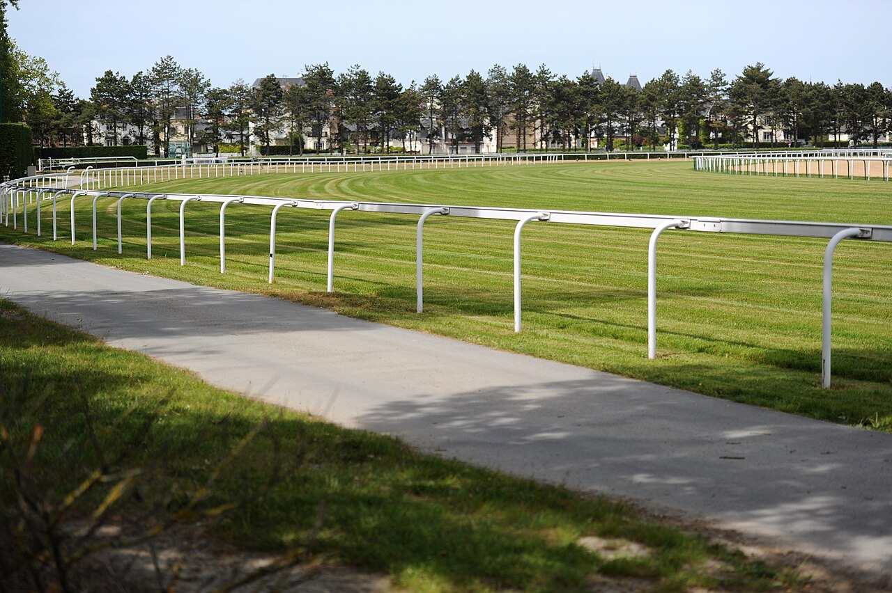

Aniol gana por una cabeza el Prix du Vergaly de Deauville a un precio largo
El ejemplar preparado por Ángel Sánchez Martín se impuso este martes en un hándicap de Clase 3 sobre 3.400 metros, con once en pista y sin figurar entre los favoritos de las apuestas.

La llegada fue de las que se deciden en la última zancada. Hugo Boutin condujo a ANIOL hasta la raya con una cabeza de ventaja sobre BELLA D'ANJOU, la montada por Marvin Grandin, tras 3.400 metros sobre pista de fibra. El crono quedó en 3'37''78 con 56 kilos a la espalda.
GUINESS STAR, con Olivier d'Andigné en la silla, fue tercera, a dos cuerpos de la segunda. VENDOMYA y STEP MORNING completaron los cinco primeros puestos de una carrera con once participantes.
El Prix du Vergaly, un hándicap de Clase 3 para ejemplares de cuatro años en adelante, no era un terreno obvio para ANIOL. En las apuestas figuraba entre los menos respaldados, y la distancia, larga y exigente, tampoco facilitaba el pronóstico.
ANIOL es un hijo de Rio de la Plata y Angel of Harlem, de cuatro años y propiedad de la Cuadra Madariaga & Cu. Llegaba a Deauville con dos victorias en 17 salidas, según sus datos de carrera, y con esta suma la tercera. Es además la primera que logra en el turf francés.
Para la cuadra de Ángel Sánchez Martín, el martes quedó así como un nuevo triunfo en Francia.
Por Martín Larrañeta